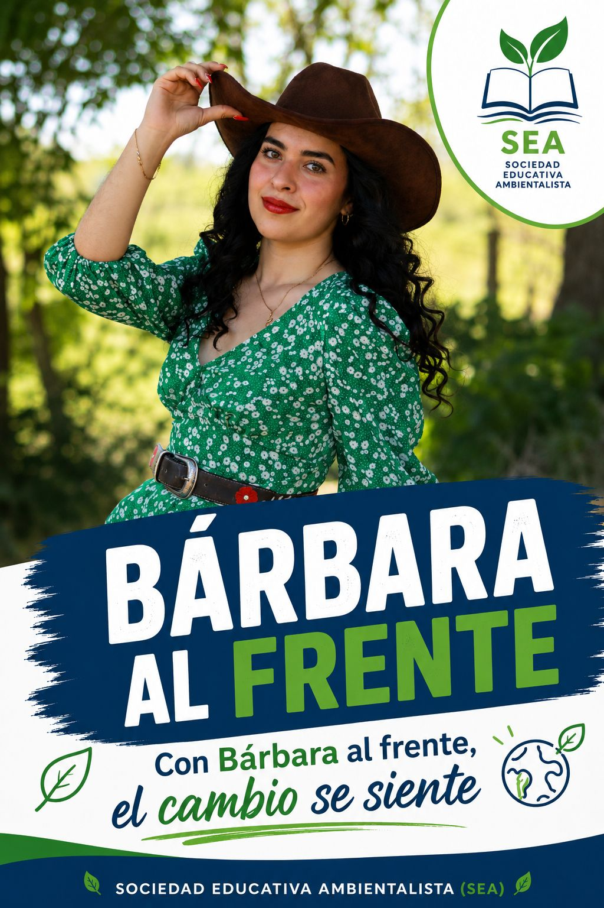
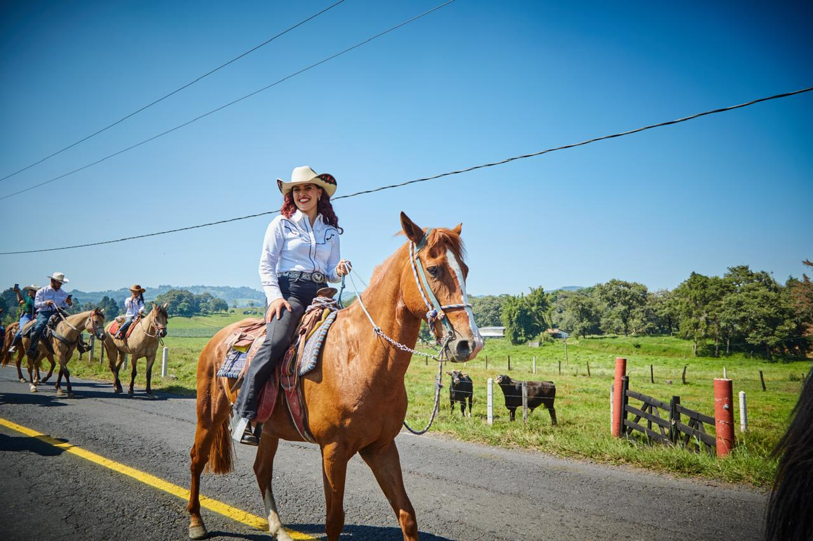

Siglas
SEA
Partido escolar ambientalista
SEA
“Educar para cuidar, cuidar para vivir”
Con Bárbara al frente, el cambio se siente. Promovemos una sociedad educada, participativa y comprometida con el cuidado del medio ambiente.

Mensaje de campaña
En esta sección podrás colocar el video oficial del partido.
Aquí irá el video de campaña
Nuestra identidad
Somos un partido escolar que une educación, conciencia ambiental y participación ciudadana.
SEA es una propuesta escolar que busca promover el cuidado del medio ambiente mediante la educación, la participación de los estudiantes y el compromiso social.
Nuestro partido representa una comunidad que aprende, propone y actúa para construir espacios más limpios, responsables y sostenibles.
SEA
Bárbara
Pablo
Andrea
Lo que hacemos
Impulsar la educación ambiental y la participación ciudadana para fomentar una cultura de respeto, conservación y cuidado del medio ambiente, contribuyendo al desarrollo sostenible de la sociedad.
Hacia dónde vamos
Construir una sociedad educada y comprometida con el cuidado del medio ambiente, donde la sostenibilidad, la participación ciudadana y la educación sean la base de un futuro mejor para todos.
Nuestros principios
Estos valores guían nuestras propuestas y acciones como partido escolar.
Defendemos el medio ambiente como base del bienestar social.
Buscamos formar ciudadanos responsables y conscientes de su entorno.
Promovemos la toma de decisiones relacionadas con el cuidado del planeta.
Creemos que todas las personas deben tener acceso a un entorno sano.
Metas principales
Nuestras acciones se enfocan en mejorar la comunidad escolar mediante educación, participación y conciencia ambiental.
Fomentar el respeto por el medio ambiente.
Impulsar una educación de calidad con conciencia ambiental.
Promover la participación ciudadana activa.
Defender la igualdad y la justicia ambiental.
Nuestra representante
Bárbara encabeza este proyecto escolar con compromiso, liderazgo y una visión ambientalista.

Candidata principal
Bárbara representa el compromiso de SEA con la educación, la participación ciudadana y el cuidado del medio ambiente. Su liderazgo busca motivar a los estudiantes a involucrarse en acciones positivas para mejorar la escuela y su entorno.
Su campaña se basa en escuchar ideas, impulsar propuestas ambientales y promover una comunidad escolar más responsable, justa y participativa.
“Con Bárbara al frente, el cambio se siente.”
Quienes hacen posible el proyecto
Después de nuestra candidata, este es el equipo que apoya, organiza y fortalece las propuestas de SEA.
Suplente
Jefa de campaña
Líder del partido
Coordinadora
Comunicación
Comunicación
Comunicación
Jefa de materiales
Acciones de campaña
Estas propuestas buscan mejorar la escuela y fortalecer la conciencia ambiental de la comunidad estudiantil.
Organizar jornadas escolares para limpiar espacios comunes y crear conciencia sobre el cuidado del entorno.
Promover el uso de botes diferenciados para basura orgánica, inorgánica y reciclable.
Realizar actividades, carteles y dinámicas para enseñar la importancia de cuidar el planeta.
Escuchar ideas de los estudiantes para mejorar el ambiente escolar y trabajar en equipo.
Información rápida
Resuelve algunas dudas importantes sobre nuestro partido.
Porque buscamos unir educación, conciencia ambiental y participación ciudadana para construir una comunidad más responsable.
Representa el compromiso con el medio ambiente, la igualdad, la justicia ambiental y el bienestar de la sociedad.
Nuestro principal compromiso es fomentar una cultura de cuidado, respeto y acción a favor del planeta.
Buscamos mejorar la conciencia ambiental, la participación estudiantil y los hábitos de cuidado dentro de la escuela.
Tu opinión importa
Comparte tus ideas para mejorar nuestra escuela y cuidar el medio ambiente.